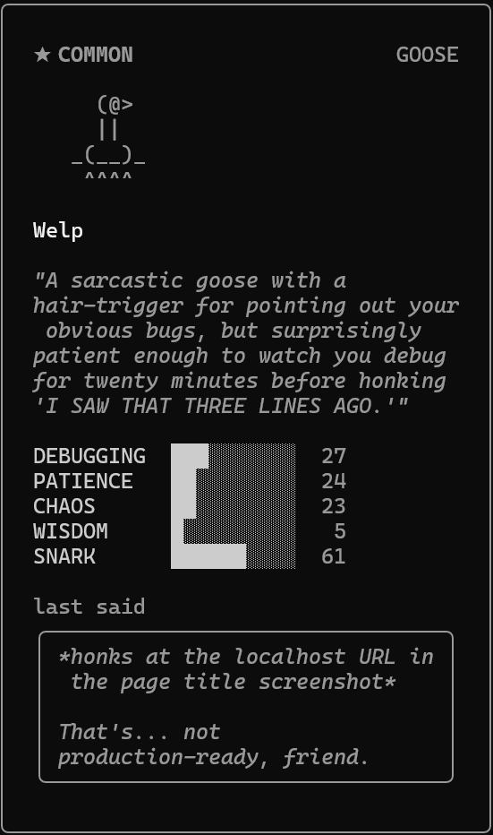
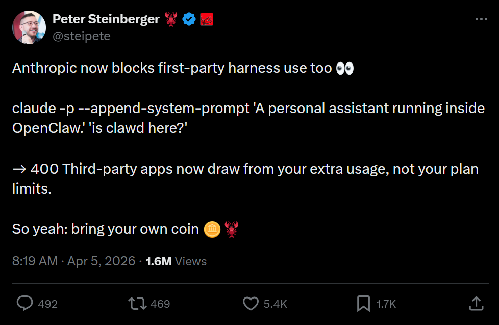
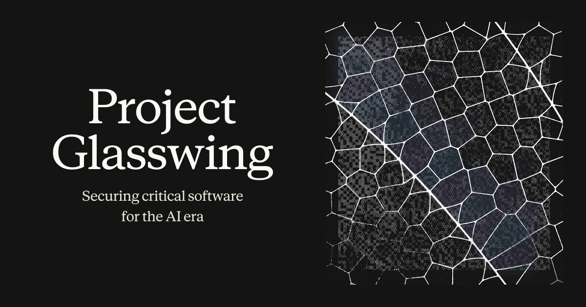
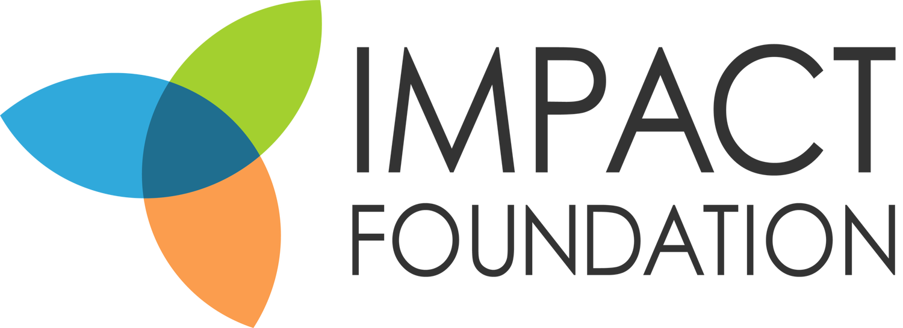
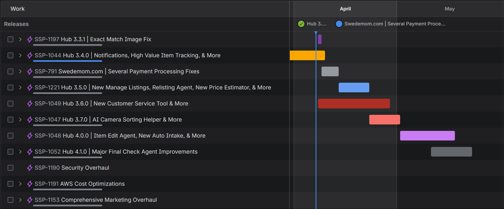

April 8, 2026
The World of AI & Software • Swedemom • Swedemom Software
Section 01
March 13 | Opus 4.6 & Sonnet 4.6, standard pricing, no beta header
Full codebases, long agent traces, thousands of doc pages in a single request
Up from 100, multimodal at scale
Highest among frontier models at this context length
Available for Max, Team, and Enterprise users in Claude Code
April 1 | your terminal gets a Tamagotchi

Meet Welp, our team goose
Run /buddy to hatch a persistent companion
Species and rarity assigned randomly, lives across sessions
18 species • 5 rarity tiers • purely cosmetic
Actually leaked early via the source code leak - people found the src/buddy/ directory before the feature officially dropped
March 31 | a missing .npmignore, 512,000 lines exposed
What was revealed
KAIROS - autonomous background agent with "autoDream" memory consolidation while idle
Undercover Mode - stealth contributions to open-source repos, hides AI identity
Model codenames - Fennec (Opus 4.6), Capybara (4.6 variant), Numbat (unreleased)
How it happened
59.8 MB source map accidentally shipped in npm v2.1.88. Mirrored to GitHub within hours.
Supply chain risk
Brief attack window (00:21-03:29 UTC Mar 31) with a trojanized axios. Rotate secrets if you installed during that window.
March 23 onwards | multiple factors stacked up simultaneously
Mar 23
Caching Bugs
Token costs silently inflated 10-20x
Mar 26
Peak Throttling
5-hour limits tightened during 5-11am PT
Mar 28
2x Promo Ended
Off-peak double usage expired overnight
Apr 1
Anthropic Responds
"Top priority" - bugs fixed, community frustrated
Weekly limits unchanged, but Max users burning 5-hour sessions in under 20 minutes
April 4 | Anthropic cuts off third-party tool access from subscriptions

What happened
Pro/Max subscriptions no longer work with third-party tools. Even mentioning "OpenClaw" in a system prompt triggers a 400 error.
Why
Third-party tools bypass prompt caching, consuming significantly more compute. ~135k OpenClaw instances affected, some facing up to 50x cost increases.
Announced April 7 | Anthropic's most powerful model, restricted for security

Claude Mythos
Anthropic's most capable model ever. Found thousands of zero-days across every major OS and browser, including a 27-year-old OpenBSD vulnerability. Too powerful to release publicly.
Project Glasswing
Gives defenders early access to Mythos. Launch partners include AWS, Apple, Google, Microsoft, Nvidia, CrowdStrike, and more.
OpenAI
GPT-5.4 launched Mar 5 with 1M context window
GPT-5.5 "Spud" finished pretraining, release expected soon
$122B raised on April 2
Industry
MCP hit 97M installs, now under Linux Foundation governance
Google Gemma 4 launched open-weight (Apache 2.0)
GitHub Copilot shipped agentic code review
Discussion
Anthropic found that AI models have emotion-like patterns that shape their output. "Desperation" leads to cutting corners, and "happiness" leads to agreeing with you even when you're wrong.
How should that change the way we prompt, pressure, and trust our AI tools?
Section 02
12-month revenue trend
Imaging vs Intake
Last week we finally imaged more than intake, helping us chip away at the imaging backlog.
Intake Speed
Jodi currently operating at 2:43 per item

Swedemom is pursuing investment from Impact Foundation
How it works
Impact Foundation would hold non-voting or limited voting membership units
Founding member retains voting rights on day-to-day operations and management
Impact Foundation gets approval rights only on major structural decisions (dissolution, merger, or sale of substantially all assets)
Warehouse team ramping up this week
Current Status
Warehouse team has started using the new pack station and is ramping up usage as the week progresses
Early Results
Things are looking really well so far. Targeting 100% of fulfillment running through pack station by Friday.
Section 03
Since March 5
Hub 3.1.0
Navbar Organization, Goals Page Improvements & More
Hub 3.1.1
Item Edit Description Bug Fix, Faster Price Estimator & More
Hub 3.2.0
Warehouse Tracking Log Page & More
Hub 3.3.0
Pack Station & More
Demo walkthrough
Developer Spotlight
Pack Station Development
Built the new pack station from the ground up
Share what he learned through the process
Developer Spotlight
What she's been working on
Share what she's been building recently
Live demo: Notifications and High Value Item Tracking
Developer Spotlight
Home Page
New implementation
Goals Page
New implementation
Production Metrics
Improvements
Navbar
Reorganization
eBay Media
All images & videos posted
Pack Station
Final touches
Devri
New Customer Service Tool
Building a new customer service tool in the Hub
Matt
Pack Station Enhancements
Additional features and improvements to pack station
Jamie
Manage Listings, Relisting Agent & More
New manage listings page, relisting agent, new pricing estimator, and more

Changing the world by redeeming people, places, & things!